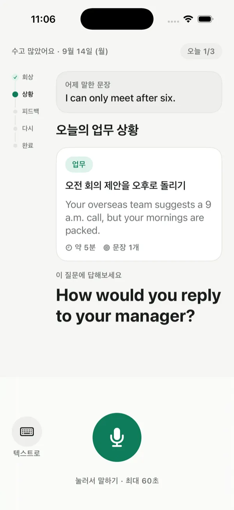
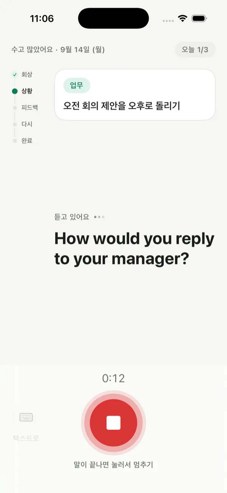
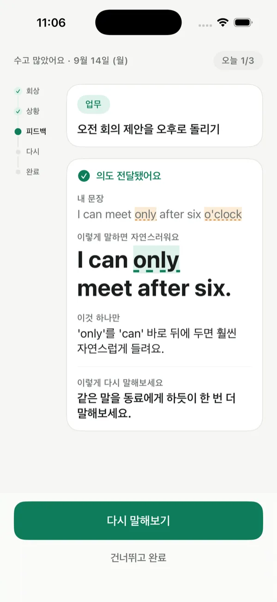
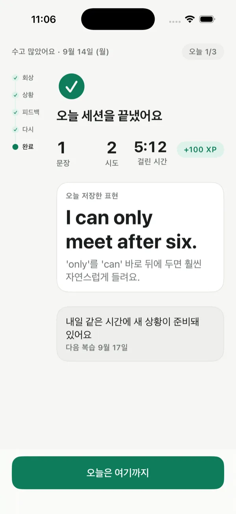

오늘의 업무 상황 하나, 한 문장 피드백, 하루 5분.

회의·출장·거래처 통화에서 쓸 업무 영어 한두 문장을, 앱을 열면 이미 준비된 오늘의 상황 하나로 연습해요. 음성으로 말하기 어려운 자리에서는 텍스트로 같은 세션을 끝낼 수 있어요.
오늘의 업무 상황 하나와 그에 대한 영어 질문이 이미 준비돼 있어요. 무엇을 공부할지 고르지 않아도 돼요.

음성으로 최대 60초까지 답해요. 말을 중간에 끊지 않고, 멈추는 시점은 사용자가 정해요. 지하철이나 사무실에서는 왼쪽의 '텍스트로' 버튼을 눌러 적어도 돼요.

의도가 전달됐는지 먼저 알려주고, 자연스러운 문장 한 개와 가장 영향이 큰 팁 한 개만 보여줘요. 달라진 부분만 표시해서 전체를 다시 읽지 않아도 돼요.
받은 문장을 참고해 같은 뜻을 한 번 더 말해봐요. 텍스트로 답했다면 한 번 더 적으면 돼요. 건너뛰고 바로 완료해도 괜찮아요.

오늘 저장한 표현 하나와 다음 복습일을 확인하고 끝나요. 연속 일수나 요일 빈칸 같은 압박 장치는 없어요.
좋은 앱들이 이미 많아요. 출근영어가 다르게 잡은 것은 세 가지예요.
하나
며칠 쉬어도 복습 큐가 쌓이지 않아요. 돌아오면 밀린 것부터가 아니라 오늘 세션부터 다시 시작해요.
둘
틀린 곳을 한꺼번에 지적하지 않아요. 의도를 살린 자연스러운 문장 한 개와 가장 영향이 큰 팁 한 개만 드려요.
셋
연 단위 강제 결제나 월 할부가 없어요. 가격과 해지 방법을 앱 화면에 그대로 적어 둬요.
출시 전 예정 가격
월간
7,900원
3일 무료 체험 후 시작
연간
59,000원
체험 없이 바로 시작
첫 달 30% 할인과 이어가면 12개월 15% 할인은 앱 안에서 안내해요.
자동 갱신 안내. 3일 무료 체험이 끝나면 별도 해지가 없는 한 정가로 자동 결제되고, 이후에도 매 기간 자동으로 갱신돼요.
해지 방법. iPhone 설정 > Apple 계정 > 구독에서 언제든 해지할 수 있어요. 갱신 24시간 전까지 해지하면 다음 결제가 되지 않고, 남은 기간은 그대로 쓸 수 있어요.
가격은 출시 전 예정 값이고, App Store 가격 정책에 따라 달라질 수 있어요. 확정 가격은 앱 안 결제 화면에 표시돼요.
출근영어 (Workday English) is a once-a-day English speaking routine for Korean office workers: one work situation for today, one sentence of feedback, about five minutes.
See Support and the Privacy Policy for details. The App Store link will be added here once the app is public.